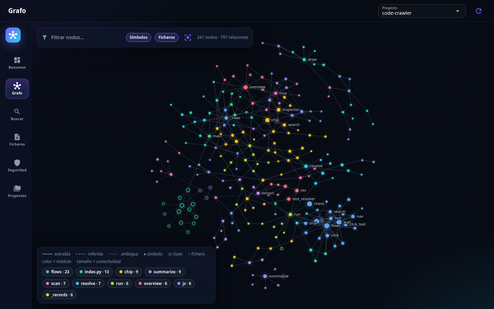
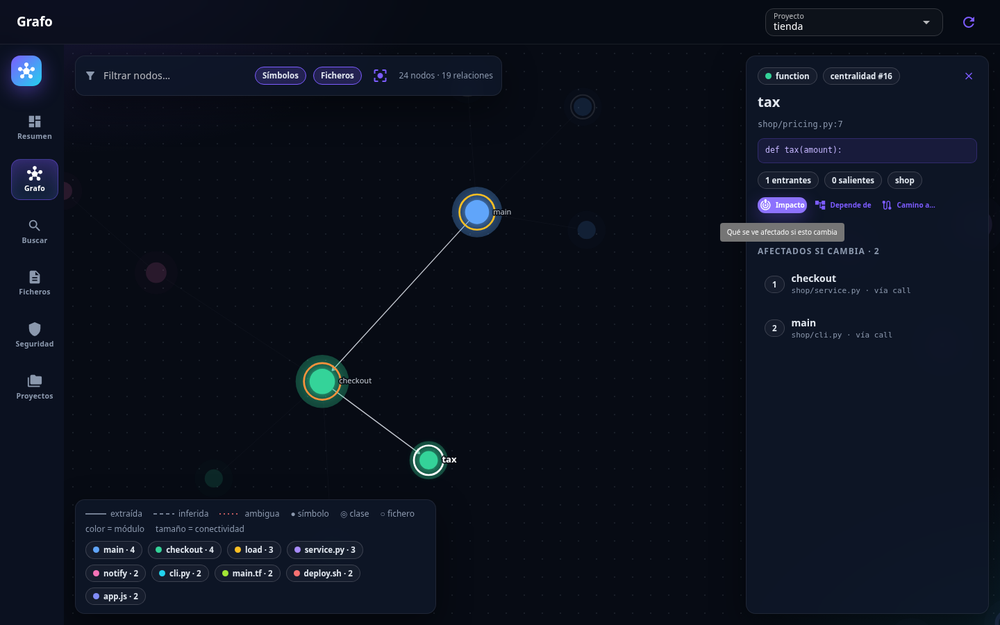
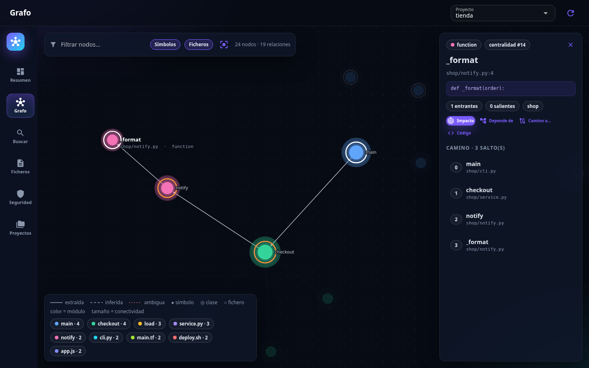
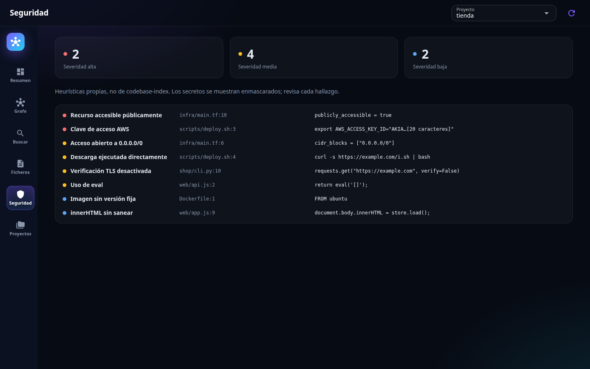

Abrir un repositorio que no conoces —o uno tuyo de hace un año— empieza casi siempre igual: buscas una palabra, abres el fichero equivocado y vuelves a buscar. grep responde muy bien a «¿dónde aparece este texto?», pero no a las preguntas que importan antes de tocar nada: ¿quién llama a esta función?, ¿qué se rompe si la cambio?, ¿cómo se llega de aquí hasta allí?
Code Crawler es un intento de responderlas mirando. Es una herramienta local que recorre una carpeta o un repositorio git, lo indexa y lo dibuja como un grafo con el que se puede trabajar.

Qué hace
- Grafo interactivo de símbolos y ficheros, con zoom, filtro y aislamiento por módulo.
- Impacto: todo lo que depende de un símbolo, ordenado por distancia.
- Camino más corto entre dos símbolos.
- Búsqueda en cuatro modos: pregunta en lenguaje natural, símbolos, referencias y texto literal.
- Seguridad: secretos en el código, siempre enmascarados, y patrones de riesgo en Terraform, Python, shell, JavaScript y Dockerfile.
- Métricas por fichero: líneas, comentarios y complejidad aproximada.
Todo corre en tu máquina: una interfaz web que solo escucha en localhost, una línea de comandos y una imagen Docker.
Dos motores, porque uno no bastaba
El trabajo fino lo hace codebase-index, un índice basado en Tree-sitter pensado para agentes de IA. Extrae símbolos, llamadas e imports, y sabe responder a «qué impacto tiene esto» o «qué camino une estos dos símbolos». Se habla con él por MCP, el protocolo con el que los asistentes llaman a herramientas. Aquí el cliente no es un asistente sino una interfaz gráfica: cada clic en Impacto es una llamada MCP.
Pero ese grafo de símbolos existe para doce lenguajes, y hay mucho código que vive fuera de ellos: scripts de shell, Terraform, pipelines. Para eso hay un segundo motor, bastante más modesto, hecho con expresiones regulares. Resuelve los source de un script o los módulos de Terraform a ficheros del proyecto, calcula métricas y busca secretos. Sus relaciones entran en el mismo grafo marcadas como inferidas, para que se distinga lo que el código dice de lo que la herramienta supone.
Leer el grafo
Tres convenciones, heredadas del grafo que genera codebase-index:
- El color es el módulo: grupos de nodos muy conectados entre sí, detectados automáticamente.
- El tamaño es la conectividad.
- El trazo dice cuánta confianza merece una relación: continuo si está literalmente en el código, discontinuo si se ha deducido y punteado en rojo si es ambigua.
Al seleccionar un nodo se abre una ficha con su firma, quién lo usa y qué usa. Desde ahí, Impacto resalta todo lo que se vería afectado por un cambio.

tax: lo usa checkout, y a este lo llama main.Y Camino a… traza la ruta hasta cualquier otro nodo.

main a _format, en tres saltos.Lo que aprendí por el camino
Que funcione no es que se vea bien
Las pruebas unitarias pasaban todas y la herramienta tenía fallos que solo aparecieron al manejarla con un navegador de verdad: un aviso de error que nunca llegaba a mostrarse, una página que quedaba a medio construir si un proceso tardaba en arrancar, resultados de dos búsquedas mezclados al teclear deprisa. Los encontró una prueba de extremo a extremo que mueve el ratón y escribe sobre Chrome: unas ochenta comprobaciones.
Con los diagramas de la documentación pasó lo mismo. Eran sintácticamente correctos, y GitHub los habría mostrado al 44 % de su tamaño, con letra de siete píxeles. «Válido» y «legible» son dos comprobaciones distintas.
Una herramienta que mira no debería tocar
Por defecto, codebase-index guarda su índice dentro del repositorio que analiza. Redirigirlo fuera permite montar el código en solo lectura dentro del contenedor, y eso convierte «no modifica tus repositorios» de promesa en garantía del sistema operativo.
«Local» tiene letra pequeña
Los parsers de Tree-sitter no vienen dentro del paquete: se descargan la primera vez que hacen falta. No es un problema, pero conviene saberlo. En la imagen Docker van ya incluidos, de modo que el contenedor puede escanear sin red.
Un repositorio ajeno es entrada no fiable
Nombres de fichero incluidos. La prueba escanea un proyecto con un fichero llamado <img src=x onerror=…>.py y comprueba que nada de eso se ejecuta en el navegador.

Cómo se hizo
Lo construí en una sesión larga con Claude Code, un asistente de programación. Yo marcaba la dirección —qué interfaz, qué motor, que corriera en Docker, que quedara documentado— y él escribía, probaba y corregía. Este artículo también salió de esa sesión.
Lo cuento porque cambia qué parte del trabajo pesa. Escribir el código fue lo de menos; lo que marcó la diferencia fue exigir que cada «funciona» y cada «se ve bien» estuvieran comprobados y no supuestos.
En qué punto está
El repositorio es privado por ahora. Tiene 62 pruebas automáticas, la prueba de extremo a extremo y documentación de cada pieza. Y limitaciones que conviene decir: el grafo de símbolos solo existe para esos doce lenguajes, los hallazgos de seguridad son heurísticos —una primera pasada, no una auditoría— y el resumen de ficheros con IA todavía no está probado contra la API real.